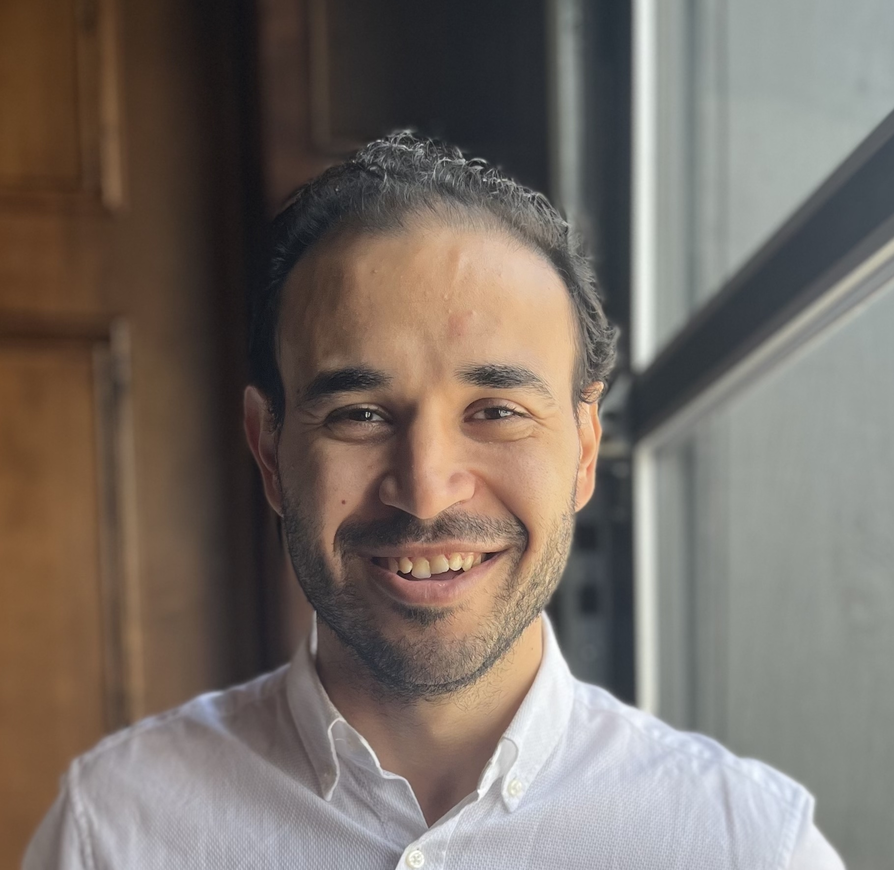

---
# Feel free to add content and custom Front Matter to this file.
# To modify the layout, see https://jekyllrb.com/docs/themes/#overriding-theme-defaults
layout: home
---

Welcome! My name is Mohamed Abdelmeguid, I am currently a Postdoctoral Scholar at Caltech GALCIT. I obtained my PhD from the Department of Civil and Environmental Engineering at the University of Illinois Urbana Champaign. My research focuses on utilizing experimental, theoretical, and computational mechanics to study dynamic failure and wave propagation during frictional sliding. My interests span a wide range of topics, including multi-physics and multi-scale modeling, fault zone physics, experimental analysis of dynamic fracture, wave propagation in solids, computational fluid dynamics, and structural analysis. My main work objective is to develop physics-based models to understand the intricacies of dynamic failure within natural and engineered systems. Currently, my work has applications in geophysics, seismology, and structural engineering.
Education:
- PhD, Civil and Environmental Engineering, University of Illinois Urbana Champaign, 2022
- MS, Civil and Environmental Engineering, University of Illinois Urbana Champaign, 2017
- BS, Mechanical Engineering, British University in Egypt, 2013
This website is work in progress and will be updated with more content soon. In the meantime, feel free to email me at meguid@caltech.edu